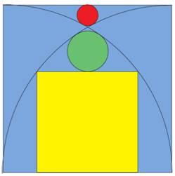
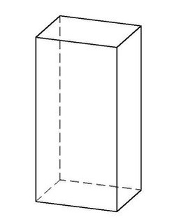
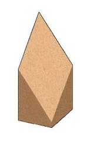

La venganza de Danielito
Todo estaba bien con Andresito, Bartolito y Cachito hasta que apareció Danielito. ...correcto, otro enigma de cumpleaños.
Andresito, Bartolito y Cachito se hicieron amigos con Danielito, y querían saber cuándo es su cumpleaños. Danielito dió una lista de 20 posibles fechas de nacimiento.
| 17 febrero 2001 |
16 marzo 2002 |
13 enero 2003 |
19 enero 2004 |
| 13 marzo 2001 |
15 abril 2002 |
16 febrero 2003 |
18 febrero 2004 |
| 13 abril 2001 |
14 mayo 2002 |
14 marzo 2003 |
19 mayo 2004 |
| 15 mayo 2001 |
12 junio 2002 |
11 abril 2003 |
14 julio 2004 |
| 17 junio 2001 |
16 agosto 2002 |
16 julio 2003 |
18 agosto 2004 |
Danielito le dijo por separado a Andresito, Bartolito y Cachito el mes, el d�a y el año de su cumpleaños, respectivamente.
Enseguida escuchamos la siguiente conversación:
- Andresito: No s� cuándo es el cumpleaños de Danielito, pero s� que Bartolito no lo sabe.
- Bartolito: Todav�a no s� cuándo es el cumpleaños de Danielito, pero s� que Cachito a�n no lo sabe.
- Cachito: Todav�a no s� cuándo es el cumpleaños de Danielito, pero s� que Andresito a�n no lo sabe.
- Andresito: Ahora s� cuando es el cumpleaños de Danielito.
- Bartolito: Ahora lo s� yo tambi�n.
- Cachito: Yo tambi�n.
En definitiva, cuando es el cumpleaños de Danielito?
Aclaración: ni Andresito, ni Bartolito, ni Cachito saben nada al principio, aparte del hecho de que a Andresito le han dicho el mes, a Bartolito el d�a (es decir, el n�mero del d�a), y a Cachito el año.
�Cu�l es el n�mero de Tanya?
Tanya cuenta que pens� en un entero positivo menor que 100 y divisible por 7. Luego anuncia que en privado le dir� d�gito unidad a Andresito y el d�gito de las decenas a Bartolito. Andresito y Bartolito son dos chicos de pensamiento l�gico. , aunque la conversación entre ellos pueda sonar extra�a:
- Andresito: Bartolito no sabe cual es el n�mero de Tanya.
- Bartolito: Ahora si lo s�.
Conociendo lo que dijo uno y otro �Puedes decir cu�l es ese n�mero?
Ver la solución
La vuelta al mundo en un d�a
Estamos planificando una carretera a construir sobre un paralelo situado en una latitud tal que circulando a 100 km/hora en forma constante se de la vuelta al mundo en un d�a exacto.
Nos preguntamos �cu�l es el paralelo?
Las edades del matrimonio
La suma de edades de un matrimonio es 91.
El marido tiene ahora el doble de lo que ten�a su esposa cuando el ten�a la misma edad que ella tiene ahora.
Qu� edad tienen?
El cumpleaños de Carlitos
Albertito y Bernardito se acaban de hacer amigos de Carlitos y quieren saber cuándo es su cumpleaños. Carlitos les da una lista con 10 posibles fechas:
- Mayo 15, Mayo 16, Mayo 19
- Junio 17, Junio 18
- Julio 14, Julio 16
- Agosto 14, Agosto 15, Agosto 17
Luego Carlitos les dice por separado a Albertito y a Bernardito, el mes y el d�a respectivamente, diciendose lo siguiente:
-Albertito: "No s� cuándo es el cumpleaños de Carlitos, pero s� que Bernard tampoco lo sabe".
-Bernardito: "Al principio no sab�a cuándo era el cumpleaños de Carlitos, pero ahora ya lo s�".
-Albertito: "Entonces yo tambi�n s� cuándo es su cumpleaños".
�cuándo es el cumpleaños de Carlitos?
D�as consecutivos
Nombrar cinco d�as consecutivos sin utilizar las palabras lunes, martes, mi�rcoles, jueves o viernes.
10 Presos
10 presos son encerrados en celdas individuales, incapaces de ver, hablar o comunicar de cualquier manera entre s�. Hay una sala de ejercicios con una sola luz, que es inicialmente apagada y la los presos no pueden ver la luz de su propia celda.
Todos los d�as, el director elige un prisionero al azar que va a la sala de ejercicios.
Una vez all�, el preso puede optar por encender la luz o apagado, y no se les permite dejar un mensaje.
En cualquier momento, un preso puede afirmar que los 10 presos han estado en el gimnasio. Si est� en un error, entonces los 10 prisioneros quedaran encerrados para siempre! Sin embargo, si son correctas todos los prisioneros son puestos en libertad.
Antes de comenzar la selección al azar, a los presos se les permite discutir un plan. �Cu�l es su mejor plan para determinar si todos los 10 prisioneros han visitado la sala de ejercicios?
Acertijo
Qu� es lo que est� hecho de nada y sin embargo se puede ver?
Dividir en tri�ngulos
Se tiene un tri�ngulo is�sceles, con lados 3, 2 y 2. El �ngulo entre los dos lados iguales es aproximadamente 97 grados. Obtus�ngulo.
�C�mo se podr� cortar en una serie de peque�os tri�ngulos que sean todos is�sceles agudos (todos los �ngulos menores de 90 grados)?
Propuesto por Elliott Line en Puzzle SIG
Medir en el cuadrado
El lado del cuadrado celeste es L. �Cu�nto miden los radios de las circunferencias roja y verde y el lado del cuadrado amarillo?.

Dividir un cuadrado
Partir un cuadrado mediante cortes rectos de forma tal que con los trozos resultantes se puedan componer diez cuadrados iguales.
Solución
El mejor tri�ngulo
Partiendo de un trozo de papel cuadrado, plegarlo de manera tal que se obtenga el mayor tri�ngulo equil�tero posible.
Pijama party
Despu�s de mucha insistencia Marta consigui� que su marido Jos� organice un 'pijama party'.
Acordaron reunirse con otras cuatro parejas. Por lo tanto, iban a ser cinco parejas, o sea diez personas, en total.
A medida que llegaban al lugar de reuni�n, y, debido a que no todos se conoc�an entre si, hubo algunos apretones de manos y presentaciones que siguieron las siguientes reglas:
1. Cuando una persona no conoce a otra le da la mano.
2. La gente no se da la mano con alguien que ya conoce.
Una vez que estuvieron todos reunidos, Jos�, afecto a las observaciones num�ricas, pregunta a los dem�s, incluyendo a su propia esposa, cu�ntas manos estrech� cada uno. Recibe las siguientes respuestas: 0,1,2,3,4,5,6,7, y 8.
Y ahora la pregunta: �Cu�ntas manos estrech� Marta?
Numerando un cubo
Queremos identificar los v�rtices de un cubo con enteros no negativos y diferentes entre si.
Luego se asignar� a cada arista la diferencia entre sus extremos seg�n la numeración anterior; los n�meros asignados a las aristas tambien deben ser diferentes entre s�.
�Como se deben numerar los v�rtices para que la suma de los n�meros correspondientes a las aristas resulte ser la menor posible?
Tuercas y Tornillos
Hay tres cajoneras de pescadores, de esas que pueden almacenar peque�os objetos. Cada cajonera tiene dos cajoncitos.
En una de las cajoneras cada caj�n contiene un tornillo. En otra de las cajoneras cada caj�n contiene una tuerca. En la tercer cajonera un caj�n contiene una tuerca; el otro caj�n contiene un tornillo.
Supongamos que abres uno cualquiera de los cajones de una de las cajoneras elegida al azar y encuentras un tornillo. �Que probabilidad hay de que en el otro caj�n de la misma cajonera tambi�n halla un tornillo?
�Local, empate o visitante?
Termin� el partido de futbol. Solamente Alejandro conoc�a el resultado.
Nos pregunt�: �Como suponen que result� para el prode: local, empate o visitante?
Un miembro del grupo aventur�: 'Para mi que no es visitante'
Otro lo sigui� con: 'debe ser local o empate'
Un tercero sugiri�: '...empate'
'Basta de suposiciones' dijo Alejandro. 'Estan en condiciones de deducirlo si les cuento que al menos uno est� en lo cierto y al menos uno est� equivocado.'
�Como termin� el partido; local empate o visitante?
Una cuerda en la plaza
En la plaza hay dos estacas perfectamente verticales, separadas 1,70 metro entre si.
Una de las estacas tiene 2,00 metros de altura; la otra 1,30 metro.
Colgamos una cuerda de 2,40 metros entre los puntos m�s altos de cada estaca. De la cuerda vamos a colgar una pesa y pretendemos ubicarla en el lugar m�s bajo posible.
Queremos saber donde va a estar el punto buscado en relación con las estacas y a que altura va a quedar.
El rombo mas grande
Se tiene un trozo de madera como el de la figura 1.
No hay forma de conocer sus medidas. No tenemos instrumentos de medición; solamente una hoja de papel que lo puede envolver por completo y unas tijeras.
Se lo quiere cortar de modo que la sección plana producida (la figura plana resultante del corte) sea un rombo de las mayores dimensiones posibles.
La figura 2 muestra un intento, pero no es la solución buscada.
�Como se puede definir por donde debe pasar el serrucho?

Figura 1

Figura 2
El terreno en forma de L
Tengo una parcela de tierra en forma de L. Las seis esquinas son �ngulos rectos perfectos, pero las longitudes son diferentes y, en ning�n caso tengo forma de medirlos.
Todo lo que tengo son algunos palos que puedo clavar al suelo, y una cuerda com�n.
Deseo determinar la posición de una nueva cerca. La cerca debe ser una sola l�nea recta, y debe dividir el �rea de mi tierra exactamente en dos.
�C�mo puedo lograr esto?
Par�bola
Por la base de un cono recto circular de 80 cm de di�metro y 40 cm de altura pasa una recta 'r' a 20 cm de su centro. Por la recta 'r', a su vez, pasa un plano ubicado de forma tal que la sección plana producida en el cono resulta ser una par�bola.
Se pregunta: �A que altura est� el v�rtice de la par�bola?
Observaciones: Existen dos soluciones.
Cuesti�n de seguridad
Me dedico a la seguridad y me identifican con 7 letras
Mi 123 es la forma generica de un buen amigo
Mi 45 es propio del desprendido
Mi 67 es una nota musical
Mi 3245 es nada
Si 2345 decimos que funciona
Como me llamo?
Amaneceres
�Donde amanecer� antes el d�a 21 de diciembre, considerando estas dos ciudades: Rosario y Usuhaia?
Se que Ushuaia est� a 54� 48' de latitud Sur y 68� 17' Longitud Oeste mientras que Rosario esta a 60� longitud oeste y 32� latitud sur.
El billete oculto
Un conocido me dice que ha ocultado un billete de $100 entre las p�ginas 75 y 76 del Manual del Constructor de M�quinas (Dubbel).
Al instante s� que es mentira - �Por qu�?
El m�stil del monumento
�Como determinar la altura que tiene el m�stil del monumento a la bandera disponiendo simplemente de una cinta m�trica y �tiles de dibujo?
M�quina l�gica
�Cual seria la pregunta que se debe formular a una maquina que siempre responde con la verdad para que aquella no pueda responder, teniendo en cuenta que la maquina solamente responde con 'Si' o con 'No', con luz verde para si, luz roja para no y sabiendo que la pregunta debe formularse de manera que se pueda responder solo con si o no.
Fuente: �� pamm
N�meros de habitaciones
Cuando Zoilo Kefalta se hizo cargo del mantenimiento del viejo hotel tuvo que reponer los n�meros identificatorios de todas las habitaciones, numeradas desde el 1 al 999. Al ordenar los materiales advirti� que faltaban todos los n�meros "nueve".
�Como les parece que razon� para deducir cuantos "nueve" deber�a comprar para identificar las habitaciones?
El Arbol M�gico
Hab�a un �rbol m�gico, que durante el primer d�a aumentaba la mitad de su altura, el segundo d�a aumentaba en un tercio,el tercer d�a en un cuarto y as� sucesivamente.
�Cu�ntos d�as tard� en crecer hasta aumentar ción veces su altura original?
Naufrago en una isla
Te ha capturado un pr�ncipe malvado, quien decide jugar contigo (con sus reglas, por supuesto).
Te ofrece liberarte elegiendo entre dos puertas: detr�s de una de ellas te espera un le�n hambriento y detr�s de la otra un tesoro que supera tus sue�os m�s alocados. Cuidando una de las puertas hay un nativo que siempre miente y cuidando la otra puerta otro nativo que siempre dice la verdad. Desafortunadamente no se los puede distinguir. Se te permite pedir ayuda con una sola pregunta a uno de los guardias. Ambos saben cual es la puerta que cuidan.
�Cual es la �nica pregunta que puedes formular para quedarte con tu libertad y las riquezas?